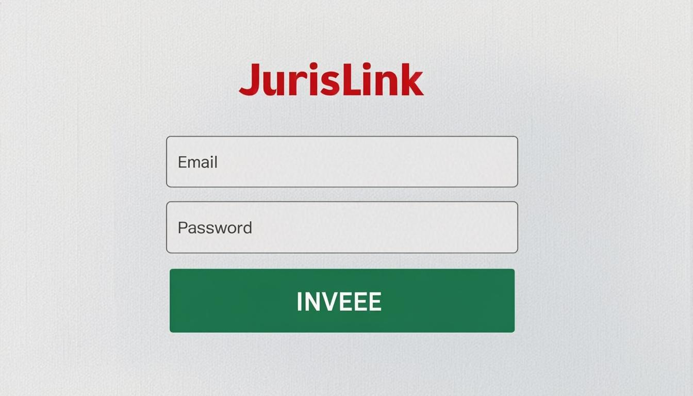

Chapitre 1
Introduction
Bienvenue dans le manuel d'utilisation du Portail Client JurisLink. Ce portail est une interface dédiée et distincte de l'application principale du cabinet. Il vous permet de suivre l'avancement de vos dossiers, consulter vos documents et factures, effectuer des paiements et communiquer avec l'équipe du cabinet.
Le portail client est conçu pour vous offrir une transparence totale sur la gestion de vos affaires. Vous y accédez de manière sécurisée avec vos identifiants personnels. Les informations affichées sont strictement limitées à vos propres dossiers et données.
Résumé de vos capacités :
✓DossiersConsultation et export de vos dossiers uniquement. Accès en lecture seule.
✓DocumentsConsultation et export de vos documents. Vous pouvez télécharger les pièces de vos dossiers.
✓FacturesConsultation et export de vos factures. Vous pouvez voir le détail et le statut de chaque facture.
✓PaiementsConsultation de l'historique de vos paiements.
✓MessagerieConsultation et envoi de messages à l'équipe du cabinet.
Important
Le portail client est une interface séparée de l'application principale utilisée par le cabinet. Vous n'avez accès qu'à vos propres données. Vous ne pouvez ni créer ni modifier des dossiers, des documents ou des factures.
Chapitre 2
Connexion au portail
L'accès au portail client se fait via l'écran de connexion dédié. Vos identifiants vous sont communiqués par le cabinet lors de votre première prise en charge.
1Accéder à l'écran de connexionLancez le portail client JurisLink depuis votre navigateur. L'écran de connexion du portail s'affiche, distinct de celui de l'application du cabinet.
2Saisir vos identifiantsEntrez votre identifiant client et votre mot de passe. Ces informations vous ont été communiquées par le cabinet lors de l'ouverture de votre dossier.
3Valider la connexionCliquez sur « Se connecter ». Si vos identifiants sont corrects, vous accédez au tableau de bord de votre portail client.

Figure 1 — Écran de connexion du portail client
Conseil
En cas d'oubli de mot de passe, contactez le cabinet par téléphone pour demander une réinitialisation. Ne communiquez jamais vos identifiants à un tiers.